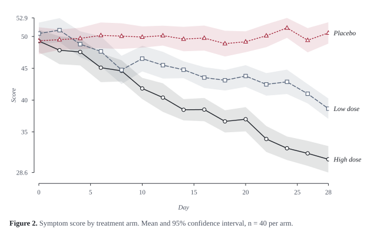
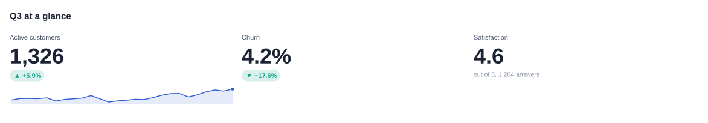
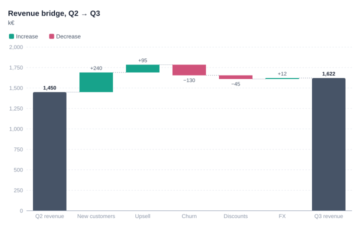
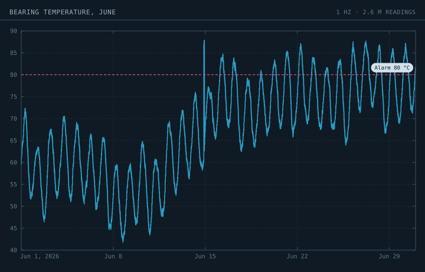
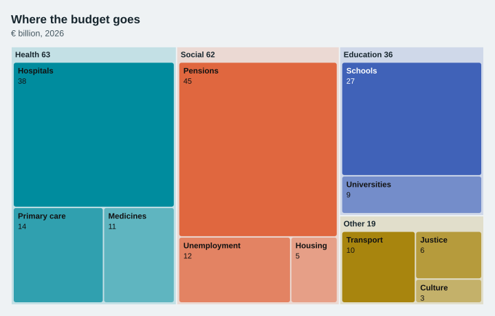
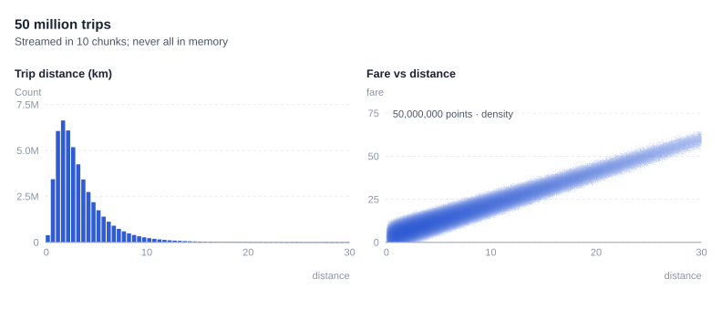
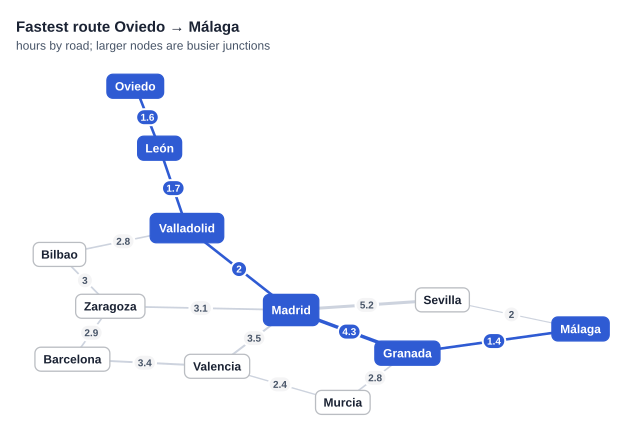

Use cases¶
Six complete examples, one per kind of work. The code is taken from examples/use_cases.py. Run that file to reproduce every image on this page.
Academic papers and theses¶
Need: figures that survive black-and-white printing and journal column widths, uncertainty shown honestly, numbered captions, vector output for LaTeX.
Use: the folio theme (serif type, range-frame axes, series told apart by line pattern and marker as well as colour, direct labels instead of a legend box), band= for confidence intervals, number= and caption= for the figure caption, and PDF output.
import numpy as np
import pandas as pd
import lineova as lv
rng = np.random.default_rng(42)
days = np.arange(0, 29, 2)
trial = pd.DataFrame({
"day": np.tile(days, 3 * 40),
"arm": np.repeat(["Placebo", "Low dose", "High dose"], len(days) * 40),
"score": np.concatenate([
50 + rng.normal(0, 6, len(days) * 40) - k * np.tile(days, 40) * 0.35 for k in (0, 1, 2)]),
})
summary = trial.groupby(["arm", "day"])["score"].agg(["mean", "sem"]).reset_index()
summary["ci"] = 1.96 * summary["sem"]
fig = lv.line(summary, x="day", y="mean", color="arm", band="ci", theme="folio", number=2,
title="Symptom score by treatment arm",
caption="Mean and 95% confidence interval, n = 40 per arm.",
x_label="Day", y_label="Score")
fig.save("academic.svg")
fig.save("academic.pdf") # vector PDF for LaTeX

Tips:
size="column"(3.5 in) andsize="page"match common journal widths.facet="column"produces panels labelled (a), (b), (c), with shared axes.bar(df, x="group", y="value", agg="mean", error="ci")gives mean ± 95% CI bars from raw rows.
Business reports and dashboards¶
Need: numbers someone can read in a few seconds, the one thing that matters highlighted, charts that can be shared as a link or dropped into slides.
Use: the ledger theme, stat tiles with a change arrow and sparkline, waterfall for bridges, highlight= to mute everything but the point, and .html output for an interactive page.
import numpy as np
import pandas as pd
import lineova as lv
rng = np.random.default_rng(42)
weekly = 1180 + np.cumsum(rng.normal(8, 25, 26))
dashboard = lv.grid([
lv.stat(weekly[-1], label="Active customers", previous=weekly[-5], spark=weekly),
lv.stat(0.042, label="Churn", previous=0.051, good="down", format="{:.1%}", delta_format="{:.1%}"),
lv.stat("4.6", label="Satisfaction", note="out of 5, 1,204 answers"),
], cols=3, title="Q3 at a glance", theme="ledger")
dashboard.save("business_kpis.svg")
bridge = lv.waterfall({"New customers": 240, "Upsell": 95, "Churn": -130, "Discounts": -45, "FX": 12},
start=("Q2 revenue", 1_450), total="Q3 revenue", theme="ledger",
title="Revenue bridge, Q2 → Q3", subtitle="k€")
bridge.save("business_bridge.svg")
bridge.save("business_bridge.html") # interactive version to share


Engineering and monitoring¶
Need: long, dense time series drawn exactly (every spike visible), thresholds, and screens that are comfortable to leave on.
Use: the dark instrument theme. Lines of any length are reduced per pixel column (first, last, min and max), so a month of 1 Hz data draws in well under a second and no spike is lost.
import numpy as np
import pandas as pd
import lineova as lv
rng = np.random.default_rng(42)
t = np.arange("2026-06-01", "2026-07-01", dtype="datetime64[s]")
temp = 60 + 8 * np.sin(np.arange(len(t)) / 86400 * 2 * np.pi) + rng.normal(0, 0.6, len(t)).cumsum() * 0.02
temp[1_200_000:1_203_000] += 25 # a 50-minute overheating event
chart = (lv.Chart(theme="instrument", title="Bearing temperature, June", subtitle="1 Hz · 2.6 M readings")
.line(x=t, y=temp, label="°C")
.hline(80, "Alarm 80 °C", color="#d2567f"))
chart.save("engineering.svg")

Related charts: candlestick for OHLC data (auto-aggregated when zoomed out), calendar for daily activity, density for where operating points cluster.
Public reports and teaching¶
Need: charts for readers who aren't analysts: fewer axes, more shape, plain labels.
Use: the fjord theme with treemap, area, slope, sankey, donut or radar.
import numpy as np
import pandas as pd
import lineova as lv
rng = np.random.default_rng(42)
budget = {"Health": {"Hospitals": 38, "Primary care": 14, "Medicines": 11},
"Education": {"Schools": 27, "Universities": 9},
"Social": {"Pensions": 45, "Unemployment": 12, "Housing": 5},
"Other": {"Transport": 10, "Justice": 6, "Culture": 3}}
lv.treemap(budget, theme="fjord", title="Where the budget goes", subtitle="€ billion, 2026").save("public.svg")

Exploring very large data¶
Need: see the shape of tens or hundreds of millions of rows, possibly more than fits in memory.
Use: lv.Chunks(source) streams data through line, scatter and histogram. Scatter plots switch to density rendering above 50,000 points. np.memmap arrays can also be passed directly.
import numpy as np
import pandas as pd
import lineova as lv
rng = np.random.default_rng(42)
def trips(): # stands in for reading Parquet row groups
g = np.random.default_rng(7)
for _ in range(10):
n = 5_000_000
dist = g.lognormal(1.0, 0.7, n)
yield {"distance": dist, "fare": 3 + dist * 1.9 + g.normal(0, 2, n)}
lv.grid([
lv.histogram(lv.Chunks(trips), x="distance", bins=np.arange(0, 30.5, 0.5), title="Trip distance (km)"),
lv.scatter(lv.Chunks(trips), x="distance", y="fare", title="Fare vs distance", x_range=(0, 30), y_range=(0, 80)),
], cols=2, title="50 million trips", subtitle="Streamed in 10 chunks; never all in memory", theme="ledger") \
.save("bigdata.svg")

With a real Parquet file (requires pyarrow):
import pyarrow.parquet as pq
batches = lambda: pq.ParquetFile("trips.parquet").iter_batches(columns=["distance", "fare"])
lv.scatter(lv.Chunks(batches), x="distance", y="fare")
Analysing networks¶
Need: compute things about a network (routes, hubs, clusters) and show the answer.
Use: lv.Graph for the algorithms and lv.network to draw them. See Graphs.
import numpy as np
import pandas as pd
import lineova as lv
rng = np.random.default_rng(42)
g = lv.Graph.from_edges([
("Madrid", "Zaragoza", 3.1), ("Zaragoza", "Barcelona", 2.9), ("Madrid", "Valencia", 3.5),
("Valencia", "Barcelona", 3.4), ("Madrid", "Sevilla", 5.2), ("Sevilla", "Málaga", 2.0),
("Madrid", "Valladolid", 2.0), ("Valladolid", "Bilbao", 2.8), ("Bilbao", "Zaragoza", 3.0),
("Madrid", "Granada", 4.3), ("Granada", "Málaga", 1.4), ("Valencia", "Murcia", 2.4),
("Murcia", "Granada", 2.8), ("Valladolid", "León", 1.7), ("León", "Oviedo", 1.6),
])
route = g.shortest_path("Oviedo", "Málaga")
print("Route:", " → ".join(route), f"({g.path_weight(route):.1f} h)")
lv.network(g, path=("Oviedo", "Málaga"), node_size="betweenness", theme="ledger",
title="Fastest route Oviedo → Málaga", subtitle="hours by road; larger nodes are busier junctions") \
.save("network.svg")
